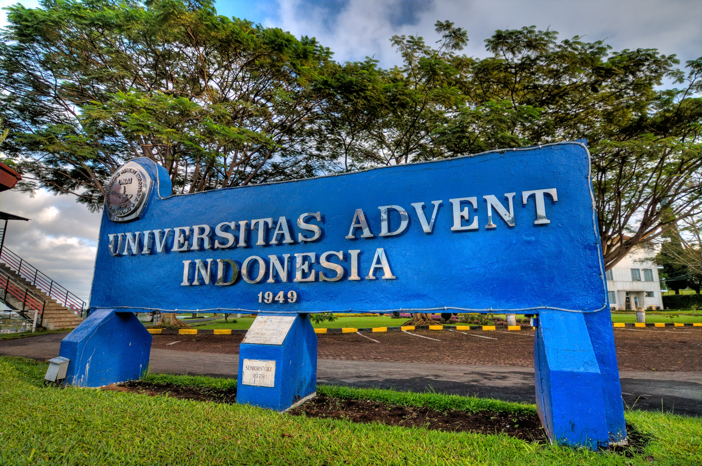
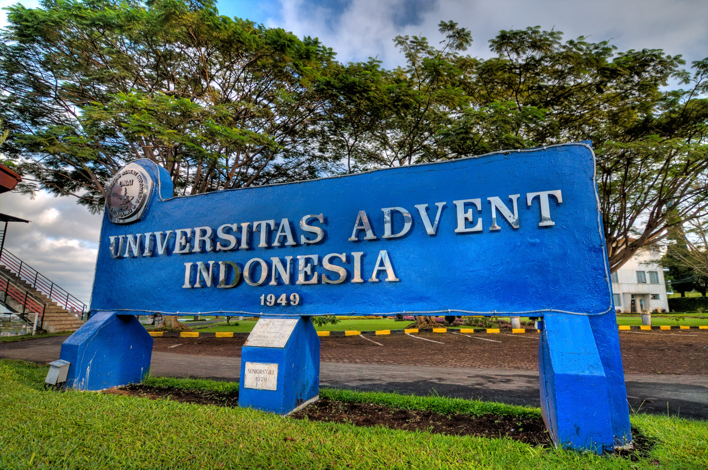

UNAI is a Education managed by the Seventh-day Adventist Church of the Western Union of indonesia. The history of UNAI is that is was founded cimindi in 1929 which was originally called Opleiding School der Advent Zending. in past, this school was founded for the education of the evangelists of the seventh-day Adventist Church.
Falsafah Pendidikan
Falsafah Pendidikan universitas Advent indonesia didasarkan atas pokok-pokok kepecayaan Greja Masehi Advent Hari Ketujuh yang sejalan dengan falsafah pancasila & UUD 1945. Falsafah pendidikan tersebut terdiri atas pokok-pokok kepercayaan sebagai berikut:
- Tuhan Allah adalah Pencipta alam semesta, termasuk Pencipta manusia. Dengan demikian, Tuhan Allah adalah sumber segala ilmu pengetahuan dan sumber segala kebenaran ilmiah.
- Manusia yang pertama diciptakan itu sempurna dalam kekuatan jasmani, rohani, pikiran dan memiliki sifat hidup kekekalan. Namun, karena penggodaan Setan, manusia yang pertama itu telah jatuh ke dalam dosa sehingga kesempurnaan dan sifat kekekalan hidup hilang dari mereka dan dari keturunan mereka.
- Yesus Kristus telah datang ke dunia untuk menebus dan menyelamatkan orang berdosa. Pemulihan orang berdosa dan pengembalian kesempurnaan serta kekekalan hidup hanyalah dimungkinkan melalui usaha pendidikan, yaitu dengan membawa kembali orang-orang berdosa kepada Yesus Kristus.
- Hasil pendidikan yang sempurna hanya dapat dicapai melalui usaha-usaha pendidikan yang seimbang, menyeluruh, terpadu dan berlangsung selama hidup.
- Kasih, merupakan dasar utama bagi seluruh proses dan hasil pendidikan.
 
